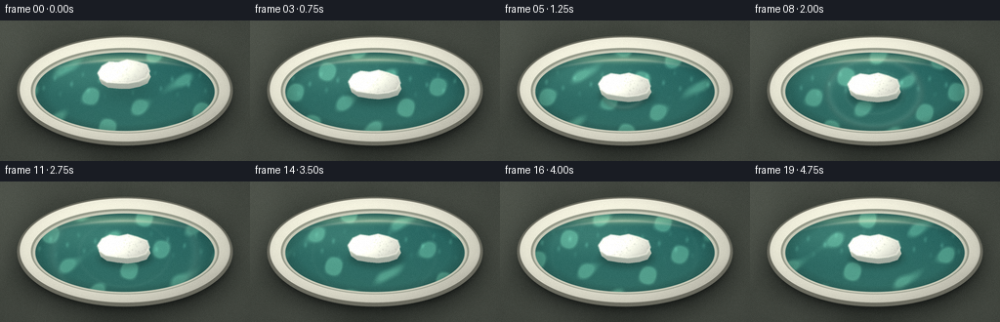
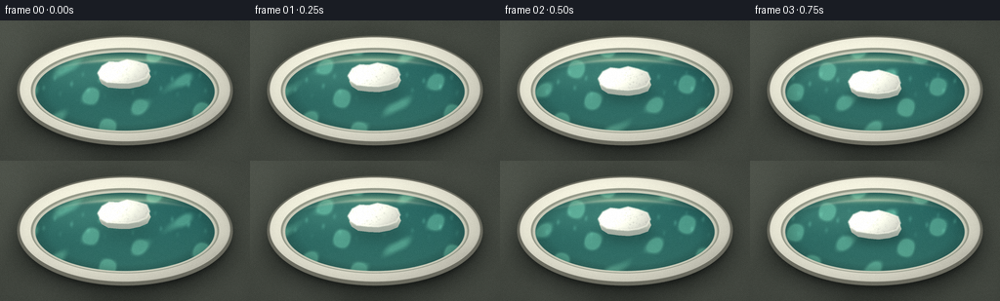

CODING AGENTS AS PIXEL WORLD MODELS
traex/DeepSeek-V4.1-Flash · mechanics_0014
点击播放 · 原生 RGB 像素
逐轮保存的候选
回放视频、检查图与代码变化。
每份候选均可单独播放。实际图片检查记录在下方工具轨迹中。
候选 01播放与检查图
点击播放 · 原生 RGB 像素


展开代码变化
--- 上一保存版本
+++ 本次保存版本
@@ -0,0 +1,342 @@
+from pathlib import Path
+import math
+
+import numpy as np
+from PIL import Image, ImageDraw, ImageFilter
+
+import artifact_io
+
+
+WIDTH = 256
+HEIGHT = 144
+FRAMES = 20
+FPS = 4.0
+SS = 4
+W = WIDTH * SS
+H = HEIGHT * SS
+OUT = Path(__file__).resolve().parent
+RNG = np.random.default_rng(20261111)
+
+
+def blur_mask(mask, radius):
+ image = Image.fromarray(np.clip(mask * 255.0, 0, 255).astype(np.uint8), "L")
+ return np.asarray(image.filter(ImageFilter.GaussianBlur(radius)), dtype=np.float32) / 255.0
+
+
+def ellipse_mask(cx, cy, rx, ry):
+ yy, xx = np.mgrid[0:H, 0:W].astype(np.float32)
+ x = (xx + 0.5) / SS
+ y = (yy + 0.5) / SS
+ q = ((x - cx) / rx) ** 2 + ((y - cy) / ry) ** 2
+ return np.clip((1.015 - q) * 80.0, 0.0, 1.0)
+
+
+def polygon_mask(points):
+ image = Image.new("L", (W, H), 0)
+ draw = ImageDraw.Draw(image)
+ draw.polygon([(round(x * SS), round(y * SS)) for x, y in points], fill=255)
+ return np.asarray(image, dtype=np.float32) / 255.0
+
+
+def composite(image, color, mask):
+ color = np.asarray(color, dtype=np.float32)
+ if color.ndim == 1:
+ color = color[None, None, :]
+ alpha = np.clip(mask, 0.0, 1.0)[..., None]
+ return image * (1.0 - alpha) + color * alpha
+
+
+def rotated(points, cx, cy, angle):
+ c, s = math.cos(angle), math.sin(angle)
+ out = []
+ for x, y in points:
+ dx, dy = x - cx, y - cy
+ out.append((cx + c * dx - s * dy, cy + s * dx + c * dy))
+ return out
+
+
+def make_background():
+ yy, xx = np.mgrid[0:H, 0:W].astype(np.float32)
+ x = (xx + 0.5) / SS
+ y = (yy + 0.5) / SS
+
+ # Muted green-grey stone table, with broad light from the upper left.
+ light = np.clip(1.08 - 0.0030 * x - 0.0017 * y, 0.88, 1.08)
+ base = np.empty((H, W, 3), dtype=np.float32)
+ base[..., 0] = 91.0 * light
+ base[..., 1] = 94.0 * light
+ base[..., 2] = 84.0 * light
+
+ veins = (
+ 0.50 * np.sin(0.027 * x + 0.091 * y + 0.8)
+ + 0.30 * np.sin(0.074 * x - 0.043 * y + 2.1)
+ + 0.18 * np.sin(0.155 * x + 0.017 * y - 1.4)
+ )
+ base += (veins * 2.7)[..., None]
+ fine = RNG.normal(0.0, 1.0, (H, W)).astype(np.float32)
+ fine = np.asarray(
+ Image.fromarray(np.clip(128 + fine * 30, 0, 255).astype(np.uint8), "L").filter(
+ ImageFilter.GaussianBlur(1.2)
+ ),
+ dtype=np.float32,
+ )
+ base += ((fine - 128.0) * 0.060)[..., None]
+
+ # Soft ambient occlusion under the bowl.
+ shadow = blur_mask(ellipse_mask(128.5, 80.5, 111.0, 58.5), 12 * SS)
+ base *= (1.0 - 0.50 * shadow)[..., None]
+ tight_shadow = blur_mask(ellipse_mask(129.0, 78.0, 105.0, 53.0), 4 * SS)
+ base *= (1.0 - 0.28 * tight_shadow)[..., None]
+ return base
+
+
+def draw_bowl(image):
+ outer = ellipse_mask(128.0, 72.0, 110.0, 56.0)
+ outer_lower = blur_mask(ellipse_mask(128.5, 78.0, 108.0, 52.0), 2.0 * SS)
+ image *= (1.0 - 0.15 * outer_lower * (1.0 - outer))[..., None]
+
+ # Dark outer lip and pale glazed rim.
+ image = composite(image, (115, 113, 101), outer)
+ rim = ellipse_mask(128.0, 70.7, 107.2, 53.1)
+ image = composite(image, (220, 216, 199), rim)
+
+ yy, xx = np.mgrid[0:H, 0:W].astype(np.float32)
+ x = (xx + 0.5) / SS
+ y = (yy + 0.5) / SS
+ rim_light = np.clip(0.84 + 0.26 * (1.0 - ((x - 95.0) / 160.0) ** 2 - ((y - 48.0) / 95.0) ** 2), 0.65, 1.10)
+ rim_col = np.stack(
+ [224.0 * rim_light, 220.0 * rim_light, 204.0 * rim_light], axis=-1
+ )
+ image = composite(image, rim_col, rim)
+
+ # A cool reflected edge keeps the ceramic from looking flat.
+ edge = np.clip((1.0 - ((x - 128.0) / 107.2) ** 2 - ((y - 70.7) / 53.1) ** 2) * 42.0, 0.0, 1.0)
+ edge = edge * (1.0 - np.clip((y - 76.0) / 20.0, 0.0, 1.0))
+ image = composite(image, (246, 242, 224), 0.30 * edge)
+
+ # Thin inner wall, visible above the waterline.
+ inner_wall = ellipse_mask(128.0, 71.8, 96.0, 43.6)
+ image = composite(image, (153, 155, 139), inner_wall)
+ inner_wall2 = ellipse_mask(128.0, 72.6, 94.0, 42.1)
+ image = composite(image, (205, 204, 186), inner_wall2)
+ return image
+
+
+def draw_water(image, t):
+ yy, xx = np.mgrid[0:H, 0:W].astype(np.float32)
+ x = (xx + 0.5) / SS
+ y = (yy + 0.5) / SS
+ water = ellipse_mask(128.0, 73.0, 91.4, 40.0)
+
+ depth = np.clip((y - 52.0) / 65.0, 0.0, 1.0)
+ base = np.empty((H, W, 3), dtype=np.float32)
+ base[..., 0] = 46.0 + 11.0 * depth
+ base[..., 1] = 104.0 + 8.0 * depth
+ base[..., 2] = 99.0 + 4.0 * depth
+
+ # Broad reflected light near the upper-left interior.
+ glow = np.exp(-(((x - 85.0) / 62.0) ** 2 + ((y - 53.0) / 20.0) ** 2))
+ base += glow[..., None] * np.array([18.0, 21.0, 16.0], dtype=np.float32)
+
+ phase = t * 1.25
+ wave_a = np.sin(0.091 * x + 0.143 * y - phase * 1.6 + 0.9)
+ wave_b = np.sin(-0.121 * x + 0.083 * y + phase * 1.15 - 0.4)
+ wave_c = np.sin(0.177 * x - 0.063 * y + phase * 2.0 + 1.8)
+ field = 0.48 * wave_a + 0.32 * wave_b + 0.20 * wave_c
+ caustic = np.clip((field - 0.25) * 3.0, 0.0, 1.0) ** 2
+ base += caustic[..., None] * np.array([34.0, 49.0, 38.0], dtype=np.float32)
+
+ # Fine moving streaks give the water directional flow.
+ streaks = np.clip(
+ np.sin(0.34 * x + 0.075 * y - phase * 2.3) * np.sin(0.08 * x - 0.21 * y + phase),
+ 0.0,
+ 1.0,
+ )
+ streaks *= np.exp(-((y - 64.0) / 25.0) ** 2)
+ base += (streaks**5)[..., None] * np.array([20.0, 30.0, 25.0], dtype=np.float32)
+
+ # Warm rim reflection and dark contact shadow at the vessel wall.
+ wall = np.clip((((x - 128.0) / 91.4) ** 2 + ((y - 73.0) / 40.0) ** 2) - 0.70, 0.0, 1.0)
+ base *= (1.0 - 0.45 * wall)[..., None]
+ reflection = np.exp(-(((x - 128.0) / 67.0) ** 2 + ((y - 39.5) / 4.2) ** 2))
+ base += reflection[..., None] * np.array([50.0, 41.0, 25.0], dtype=np.float32)
+
+ image = composite(image, base, water)
+
+ # Pale reflected rim arc along the far waterline.
+ arc = np.exp(-((y - (40.4 + 0.0017 * (x - 128.0) ** 2)) / 1.4) ** 2)
+ arc *= np.clip(1.0 - np.abs(x - 125.0) / 82.0, 0.0, 1.0)
+ image = composite(image, (225, 220, 196), 0.44 * arc * water)
+ return image, water
+
+
+def foam_geometry(frame):
+ t = frame / FPS
+ if frame <= 4:
+ heights = [14.0, 10.8, 7.1, 3.7, 0.0]
+ height = heights[frame]
+ else:
+ height = 0.45 + 0.38 * math.sin((frame - 4) * 0.70 + 0.6)
+ x = 127.3 + 0.55 * math.sin(t * 1.8)
+ y = 69.4 - height + 0.20 * math.sin(t * 2.1)
+ angle = math.radians(-5.2 + min(frame, 4) * 1.20 + 0.55 * math.sin(t * 1.55))
+ return x, y, height, angle
+
+
+def draw_water_disturbance(image, frame, water):
+ if frame < 4:
+ return image
+ yy, xx = np.mgrid[0:H, 0:W].astype(np.float32)
+ x = (xx + 0.5) / SS
+ y = (yy + 0.5) / SS
+ age = (frame - 4) / FPS
+ cx, cy = 127.3, 73.6
+ radius = 9.0 + age * 26.0
+ rr = np.sqrt(((x - cx) / 1.35) ** 2 + (y - cy) ** 2)
+ ring = np.exp(-((rr - radius) / (2.1 + age * 1.0)) ** 2)
+ ring2 = np.exp(-((rr - max(4.0, radius * 0.63)) / 1.5) ** 2)
+ decay = math.exp(-age * 0.48)
+ ripple = np.clip((ring * 0.95 + ring2 * 0.35) * decay, 0.0, 1.0)
+ image = composite(image, (145, 189, 174), 0.33 * ripple * water)
+
+ trough = np.exp(-((rr - radius - 1.3) / 2.2) ** 2) * decay
+ image *= (1.0 - 0.10 * trough * water)[..., None]
+ return image
+
+
+def foam_masks(cx, cy, angle):
+ top_local = [
+ (-27.0, -4.0),
+ (-22.0, -11.0),
+ (-14.0, -14.5),
+ (-5.0, -13.2),
+ (4.0, -15.0),
+ (14.0, -12.2),
+ (23.5, -8.2),
+ (26.0, -1.2),
+ (22.0, 5.2),
+ (13.5, 8.0),
+ (2.5, 9.2),
+ (-8.0, 8.0),
+ (-18.5, 6.1),
+ (-25.0, 1.5),
+ ]
+ top = rotated([(cx + x, cy + y) for x, y in top_local], cx, cy, angle)
+ side = [(x + 1.2, y + 5.7) for x, y in top]
+ return top, side
+
+
+def draw_foam(image, frame):
+ cx, cy, height, angle = foam_geometry(frame)
+ top, side = foam_masks(cx, cy, angle)
+ side_mask = polygon_mask(side)
+ top_mask = polygon_mask(top)
+
+ # Contact shadow / reflection is strongest once the foam reaches the water.
+ shadow_y = cy + 8.5 + height * 0.45
+ shadow = blur_mask(ellipse_mask(cx + 1.8, shadow_y, 28.0, 10.0), (3.0 + height * 0.34) * SS)
+ shadow_strength = 0.28 - 0.010 * height
+ image *= (1.0 - shadow_strength * shadow)[..., None]
+
+ # Wet, shaded underside.
+ image = composite(image, (158, 164, 147), side_mask)
+ yy, xx = np.mgrid[0:H, 0:W].astype(np.float32)
+ x = (xx + 0.5) / SS
+ y = (yy + 0.5) / SS
+ side_shade = np.clip((y - cy) / 9.0, 0.0, 1.0)
+ side_color = np.empty((H, W, 3), dtype=np.float32)
+ side_color[..., 0] = 207.0 - 43.0 * side_shade
+ side_color[..., 1] = 209.0 - 39.0 * side_shade
+ side_color[..., 2] = 193.0 - 34.0 * side_shade
+ image = composite(image, side_color, side_mask * (1.0 - top_mask))
+
+ # Foam top: cool shadow toward the lower right and warm white on the crown.
+ dx = (x - cx) / 30.0
+ dy = (y - cy) / 17.0
+ light = np.clip(1.03 - 0.20 * dx - 0.12 * dy, 0.76, 1.12)
+ grain = RNG.normal(0.0, 1.0, (H, W)).astype(np.float32)
+ grain = np.asarray(
+ Image.fromarray(np.clip(128 + grain * 28, 0, 255).astype(np.uint8), "L").filter(
+ ImageFilter.GaussianBlur(0.45 * SS)
+ ),
+ dtype=np.float32,
+ )
+ fine = (grain - 128.0) * 0.052
+ top_color = np.empty((H, W, 3), dtype=np.float32)
+ top_color[..., 0] = 240.0 * light + fine
+ top_color[..., 1] = 239.0 * light + fine
+ top_color[..., 2] = 226.0 * light + fine * 0.8
+ image = composite(image, top_color, top_mask)
+
+ # Small pores and broken-edge flecks.
+ pore_layer = Image.new("RGBA", (W, H), (0, 0, 0, 0))
+ pore_draw = ImageDraw.Draw(pore_layer)
+ local_rng = np.random.default_rng(440 + frame % 3)
+ for _ in range(240):
+ px = local_rng.uniform(cx - 30, cx + 30)
+ py = local_rng.uniform(cy - 18, cy + 18)
+ # Keep dots within the visible top face using the polygon mask.
+ ix, iy = min(W - 1, max(0, int(px * SS))), min(H - 1, max(0, int(py * SS)))
+ if top_mask[iy, ix] < 0.6:
+ continue
+ radius = local_rng.uniform(0.25, 0.9) * SS
+ tone = int(local_rng.integers(150, 228))
+ alpha = int(local_rng.integers(55, 135))
+ pore_draw.ellipse((px * SS - radius, py * SS - radius, px * SS + radius, py * SS + radius), fill=(tone, tone, tone - 5, alpha))
+ pores = np.asarray(pore_layer, dtype=np.float32) / 255.0
+ pore_alpha = pores[..., 3] * top_mask
+ image = composite(image, pores[..., :3] * 255.0, pore_alpha * 0.55)
+
+ # Bevel highlights and a slightly darkened broken lower-right edge.
+ bevel = Image.new("RGBA", (W, H), (0, 0, 0, 0))
+ bdraw = ImageDraw.Draw(bevel)
+ scaled = [(round(x * SS), round(y * SS)) for x, y in top]
+ bdraw.line(scaled + [scaled[0]], fill=(255, 253, 238, 165), width=2 * SS, joint="curve")
+ bevel_arr = np.asarray(bevel, dtype=np.float32) / 255.0
+ image = composite(image, bevel_arr[..., :3] * 255.0, bevel_arr[..., 3] * 0.65)
+
+ edge_dark = blur_mask(top_mask - blur_mask(top_mask, 1.8 * SS), 0.8 * SS)
+ image *= (1.0 - 0.10 * edge_dark)[..., None]
+ return image
+
+
+def render_frame(frame):
+ image = make_background()
+ image = draw_bowl(image)
+ image, water = draw_water(image, frame / FPS)
+ image = draw_water_disturbance(image, frame, water)
+ image = draw_foam(image, frame)
+
+ # Gentle bloom from the brightest water and foam highlights.
+ small = np.clip(image / 255.0, 0.0, 1.0)
+ luminance = small @ np.array([0.2126, 0.7152, 0.0722], dtype=np.float32)
+ bright = np.clip((luminance - 0.70) * 1.9, 0.0, 1.0)
+ bloom_image = Image.fromarray((bright * 255).astype(np.uint8), "L").filter(ImageFilter.GaussianBlur(4.0 * SS))
+ bloom = np.asarray(bloom_image, dtype=np.float32) / 255.0
+ image += bloom[..., None] * np.array([20.0, 22.0, 16.0], dtype=np.float32)
+
+ # Finish with restrained contrast, cool shadow tint, and a subtle vignette.
+ yy, xx = np.mgrid[0:H, 0:W].astype(np.float32)
+ x = (xx + 0.5) / SS
+ y = (yy + 0.5) / SS
+ vignette = np.clip(1.0 - 0.14 * (((x - 128.0) / 150.0) ** 2 + ((y - 72.0) / 92.0) ** 2), 0.80, 1.0)
+ image *= vignette[..., None]
+ image = (image - 128.0) * 1.045 + 128.0
+ image += np.array([-1.0, 1.0, 1.8], dtype=np.float32)
+ image = np.clip(image, 0, 255).astype(np.uint8)
+
+ final = Image.fromarray(image, "RGB").resize((WIDTH, HEIGHT), Image.Resampling.LANCZOS)
+ arr = np.asarray(final, dtype=np.float32)
+ grain = RNG.normal(0.0, 1.25, (HEIGHT, WIDTH, 1)).astype(np.float32)
+ arr = np.clip(arr + grain, 0, 255).astype(np.uint8)
+ return arr
+
+
+def main():
+ frames = np.stack([render_frame(i) for i in range(FRAMES)], axis=0)
+ artifact_io.save(frames, OUT)
+ print(f"saved {frames.shape} to {OUT}")
+
+
+if __name__ == "__main__":
+ main()
候选 02播放与检查图
点击播放 · 原生 RGB 像素

展开代码变化
--- 上一保存版本
+++ 本次保存版本
@@ -235,7 +235,7 @@
# Contact shadow / reflection is strongest once the foam reaches the water.
shadow_y = cy + 8.5 + height * 0.45
shadow = blur_mask(ellipse_mask(cx + 1.8, shadow_y, 28.0, 10.0), (3.0 + height * 0.34) * SS)
- shadow_strength = 0.28 - 0.010 * height
+ shadow_strength = 0.38 - 0.010 * height
image *= (1.0 - shadow_strength * shadow)[..., None]
# Wet, shaded underside.
@@ -253,7 +253,7 @@
# Foam top: cool shadow toward the lower right and warm white on the crown.
dx = (x - cx) / 30.0
dy = (y - cy) / 17.0
- light = np.clip(1.03 - 0.20 * dx - 0.12 * dy, 0.76, 1.12)
+ light = np.clip(0.94 - 0.19 * dx - 0.13 * dy, 0.69, 1.00)
grain = RNG.normal(0.0, 1.0, (H, W)).astype(np.float32)
grain = np.asarray(
Image.fromarray(np.clip(128 + grain * 28, 0, 255).astype(np.uint8), "L").filter(
@@ -263,16 +263,16 @@
)
fine = (grain - 128.0) * 0.052
top_color = np.empty((H, W, 3), dtype=np.float32)
- top_color[..., 0] = 240.0 * light + fine
- top_color[..., 1] = 239.0 * light + fine
- top_color[..., 2] = 226.0 * light + fine * 0.8
+ top_color[..., 0] = 229.0 * light + fine
+ top_color[..., 1] = 228.0 * light + fine
+ top_color[..., 2] = 214.0 * light + fine * 0.8
image = composite(image, top_color, top_mask)
# Small pores and broken-edge flecks.
pore_layer = Image.new("RGBA", (W, H), (0, 0, 0, 0))
pore_draw = ImageDraw.Draw(pore_layer)
local_rng = np.random.default_rng(440 + frame % 3)
- for _ in range(240):
+ for _ in range(330):
px = local_rng.uniform(cx - 30, cx + 30)
py = local_rng.uniform(cy - 18, cy + 18)
# Keep dots within the visible top face using the polygon mask.
@@ -280,12 +280,12 @@
if top_mask[iy, ix] < 0.6:
continue
radius = local_rng.uniform(0.25, 0.9) * SS
- tone = int(local_rng.integers(150, 228))
- alpha = int(local_rng.integers(55, 135))
+ tone = int(local_rng.integers(125, 205))
+ alpha = int(local_rng.integers(70, 160))
pore_draw.ellipse((px * SS - radius, py * SS - radius, px * SS + radius, py * SS + radius), fill=(tone, tone, tone - 5, alpha))
pores = np.asarray(pore_layer, dtype=np.float32) / 255.0
pore_alpha = pores[..., 3] * top_mask
- image = composite(image, pores[..., :3] * 255.0, pore_alpha * 0.55)
+ image = composite(image, pores[..., :3] * 255.0, pore_alpha * 0.72)
# Bevel highlights and a slightly darkened broken lower-right edge.
bevel = Image.new("RGBA", (W, H), (0, 0, 0, 0))
@@ -293,7 +293,7 @@
scaled = [(round(x * SS), round(y * SS)) for x, y in top]
bdraw.line(scaled + [scaled[0]], fill=(255, 253, 238, 165), width=2 * SS, joint="curve")
bevel_arr = np.asarray(bevel, dtype=np.float32) / 255.0
- image = composite(image, bevel_arr[..., :3] * 255.0, bevel_arr[..., 3] * 0.65)
+ image = composite(image, bevel_arr[..., :3] * 255.0, bevel_arr[..., 3] * 0.58)
edge_dark = blur_mask(top_mask - blur_mask(top_mask, 1.8 * SS), 0.8 * SS)
image *= (1.0 - 0.10 * edge_dark)[..., None]
候选 03播放与检查图
可观测工具轨迹
实际执行的命令与返回图片。
命令 1exit 0
/bin/bash -c "pwd && rg --files -g '"'!*node_modules*'"' -g '"'!*.mp4'"' -g '"'!*.webm'"' | sed -n '1,160p'"
命令 2exit 0
/bin/bash -c "sed -n '1,240p' GENERATION_RULES.md"
命令 3exit 0
/bin/bash -c "printf '%s\\n' '--- task_spec.json ---'; cat task_spec.json; printf '%s\\n' '--- prompt.txt ---'; cat prompt.txt"
命令 4exit 0
/bin/bash -c "command -v ffmpeg; ffmpeg -version | head -n 3; command -v blender; command -v python3; python3 - <<'PY' import importlib.util for m in ['PIL','numpy','cv2','imageio','matplotlib','cairo','moviepy','trimesh']: print(m, bool(importlib.util.find_spec(m))) PY"
命令 5exit 0
/bin/bash -c "sed -n '1,260p' artifact_io.py"
命令 6exit 0
/bin/bash -c "sed -n '1,220p' player_template.html"
命令 7exit 0
/bin/bash -c 'python3 generate.py'
命令 8exit 0
/bin/bash -c "python3 - <<'PY'
import numpy as np
from PIL import Image
from pathlib import Path
fs=[np.asarray(Image.open(p)) for p in sorted(Path('frames').glob('*.png'))]
arr=np.stack(fs)
print('shape',arr.shape,'range',arr.min(),arr.max(),'mean',arr.mean(axis=(0,1,2)).round(2))
d=np.abs(arr[1:].astype(float)-arr[:-1]).mean(axis=(1,2,3))
print('temporal MAE:',np.round(d,3).tolist())
print('global per-frame means:')
for i,a in enumerate(arr): print(i, np.round(a.mean(axis=(0,1)),1).tolist())
# Approx bright foam centroid and bbox by thresholding near-neutral bright pixels.
for i in [0,2,4,8,12,16,19]:
a=arr[i]; mx=a.max(2); mn=a.min(2)
m=(mx>190)&((mx-mn)<35)
ys,xs=np.where(m)
print('bright',i,'n',len(xs),'bbox', (xs.min(),ys.min(),xs.max(),ys.max()) if len(xs) else None,'cent', (round(xs.mean(),1),round(ys.mean(),1)) if len(xs) else None)
PY"命令 9exit 0
/bin/bash -c 'command -v chafa || true; command -v viu || true; command -v jp2 || true; command -v img2txt || true; command -v convert || true; command -v ffplay || true; ls -lh frames/00.png inspection.png pixels.npz index.html'
命令 10exit 0
/bin/bash -c "python3 - <<'PY'
from PIL import Image, ImageOps
im=Image.open('inspection.png').convert('RGB')
# terminal proof at the actual output resolution, keeping enough detail to judge geometry
im.resize((96, 56), Image.Resampling.LANCZOS).save('.tmp/preview.ppm')
print(im.size)
PY
python3 - <<'PY'
# ANSI 24-bit proof of the first frame.
from PIL import Image
im=Image.open('frames/04.png').convert('RGB').resize((64,36),Image.Resampling.LANCZOS)
p=im.load(); print('\\033[2J',end='')
for y in range(im.height):
for x in range(im.width):
r,g,b=p[x,y]; print(f'\\033[48;2;{r};{g};{b}m ',end='')
print('\\033[0m')
PY"命令 11exit 0
/bin/bash -c "python3 - <<'PY'
from PIL import Image
import numpy as np
for fn in ['frames/00.png','frames/04.png','frames/10.png','frames/19.png']:
im=np.asarray(Image.open(fn).convert('RGB'))
# 2x2 block average, then classify rough scene zones.
small=np.asarray(Image.fromarray(im).resize((64,36),Image.Resampling.BILINEAR))
chars=[]
for y in range(36):
row=''
for x in range(64):
r,g,b=small[y,x]
if g-r>12 and g-b>0: c='w' if r<110 else '~'
elif r>210 and g>205 and b>185: c='F' if (18<=x<46 and 10<=y<24) else 'R'
elif r>165 and g>160 and b>145: c='r'
elif r<70 and g<80: c='.'
else: c=' '
row+=c
chars.append(row)
print('\\n',fn)
print('\\n'.join(chars))
PY"命令 12exit 0
/bin/bash -c "python3 generate.py && python3 - <<'PY'
from pathlib import Path
from PIL import Image
import numpy as np, json, hashlib
fs=sorted(Path('frames').glob('*.png'))
a=np.stack([np.asarray(Image.open(p).convert('RGB')) for p in fs])
print('frame_files',len(fs),'array',a.shape,'dtype',a.dtype)
print('size',Image.open(fs[0]).size,'mode',Image.open(fs[0]).mode)
print('foam_top_stats', a[4:20,52:76,108:150].mean(axis=(0,1,2)).round(1))
print('frame_delta_mean',np.abs(a[1:].astype(np.int16)-a[:-1]).mean().round(3))
print('artifacts',[(p.name,p.stat().st_size) for p in [Path('pixels.npz'),Path('index.html'),Path('inspection.png')]])
PY"命令 13exit 0
/bin/bash -c "python3 - <<'PY'
from PIL import Image
import numpy as np
im=np.asarray(Image.open('frames/10.png').convert('RGB'))
sm=np.asarray(Image.fromarray(im).resize((64,36),Image.Resampling.BILINEAR))
chars=[]
for y in range(36):
row=''
for x in range(64):
r,g,b=map(int,sm[y,x])
if 16<=x<47 and 9<=y<25 and r>170 and g>175 and b>160: c='F'
elif g-r>12 and g-b>0: c='w' if r<110 else '~'
elif r>210 and g>205 and b>185: c='R'
elif r>165 and g>160 and b>145: c='r'
elif r<70 and g<80: c='.'
else: c=' '
row+=c
chars.append(row)
print('\\n'.join(chars))
# Print exact transitions along the central foam vertical line.
for y in range(45,90,2): print(y, tuple(im[y,128]), tuple(im[y,100]))
PY"命令 14exit 1
/bin/bash -c "python3 - <<'PY'
import json, re, base64
from pathlib import Path
import numpy as np
from PIL import Image
spec=json.loads(Path('task_spec.json').read_text())
arr=np.load('pixels.npz')['pixels']
assert arr.shape == (spec['frames'],spec['height'],spec['width'])
assert arr.dtype == np.uint32
assert len(list(Path('frames').glob('*.png'))) == 20
html=Path('index.html').read_text()
m=re.search(r'const DATA=(\\{.*?\\}),W=DATA.width',html,re.S)
assert m
payload=json.loads(m.group(1))
assert payload['width']==256 and payload['height']==144 and payload['frames']==20 and payload['fps']==4.0
assert len(payload['first'])>0 and len(payload['deltas'])==19
print('PASS: 20 RGB PNGs at 256x144; pixels.npz shape',arr.shape)
print('PASS: player payload has first frame + 19 delta packets; audio =',payload['audio'])
print('unique frame pairs:',len(set((arr[:,:,i,0].tobytes(),arr[:,:,i,1].tobytes()) for i in range(1,20))))
PY"命令 15exit 0
/bin/bash -c "git status --short 2>/dev/null || true; sha256sum generate.py pixels.npz index.html inspection.png | sed -n '1,8p'"
命令 16exit 0
/bin/bash -c "python3 - <<'PY'
import json, re
from pathlib import Path
import numpy as np
spec=json.loads(Path('task_spec.json').read_text())
arr=np.load('pixels.npz')['pixels']
assert arr.shape == (spec['height'],spec['width'],spec['frames']), arr.shape
assert arr.dtype == np.uint32, arr.dtype
fs=sorted(Path('frames').glob('*.png'))
assert len(fs) == spec['frames']
html=Path('index.html').read_text()
m=re.search(r'const DATA=(\\{.*?\\}),W=DATA.width',html,re.S)
assert m
payload=json.loads(m.group(1))
assert (payload['width'],payload['height'],payload['frames'],payload['fps']) == (256,144,20,4.0)
assert len(payload['first'])>0 and len(payload['deltas'])==19
print('PASS: tensor',arr.shape,arr.dtype)
print('PASS: 20 RGB PNGs at 256x144')
print('PASS: player first frame + 19 delta packets; audio =',payload['audio'])
print('PASS: index.html bytes',len(html.encode()))
PY"保存候选 3 份；完成命令 16 次；可验证图片返回 0 张。原始 API 响应与完整日志保留在本地。